Welcome! This guide will walk you through setting up a Google Apps Script that acts as a private API to send emails from your custom domain.
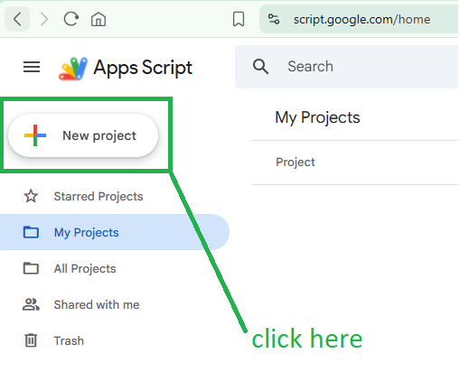
/********************************************************************************
* 🚀 USER CONFIGURATION SETTINGS (EDIT THESE VALUES BELOW)
* ----------------------------------------------------------------------------
* INSTRUCTIONS:
* Change the text inside the quotes below to your own private credentials.
* You will need these exact values in the Dornorium setup to connect it to the Gmail App.
* Do not change anything else in the rest of the script!
********************************************************************************/
var CONFIG = {
SECRET_KEY: "YourSecretKey123", // Change this to your private security secret
API_USERNAME: "user", // Change this to your desired API username
API_PASSWORD: "SomePassword" // Change this to your desired API password
};
/********************************************************************************
* CORE SCRIPT LOGIC (DO NOT EDIT BELOW THIS LINE)
********************************************************************************/
function doGet(e) {
return handleRequest(e);
}
function doPost(e) {
return handleRequest(e);
}
function handleRequest(e) {
var p = e.parameter;
// Validate the secret key
if (p.secret !== CONFIG.SECRET_KEY) {
return ContentService.createTextOutput(JSON.stringify({status: "error", message: "Unauthorized"}))
.setMimeType(ContentService.MimeType.JSON);
}
// Validate username and password credentials
if (p.username !== CONFIG.API_USERNAME || p.password !== CONFIG.API_PASSWORD) {
return ContentService.createTextOutput(JSON.stringify({status: "error", message: "Invalid Credentials"}))
.setMimeType(ContentService.MimeType.JSON);
}
try {
var options = {
htmlBody: p.message
};
if (p.from) {
options.from = p.from;
}
GmailApp.sendEmail(p.to, p.subject, "", options);
return ContentService.createTextOutput(JSON.stringify({status: "success"}))
.setMimeType(ContentService.MimeType.JSON);
} catch (err) {
return ContentService.createTextOutput(JSON.stringify({status: "error", message: err.toString()}))
.setMimeType(ContentService.MimeType.JSON);
}
}Ctrl + S. Name your project something like "Gmail API Wrapper".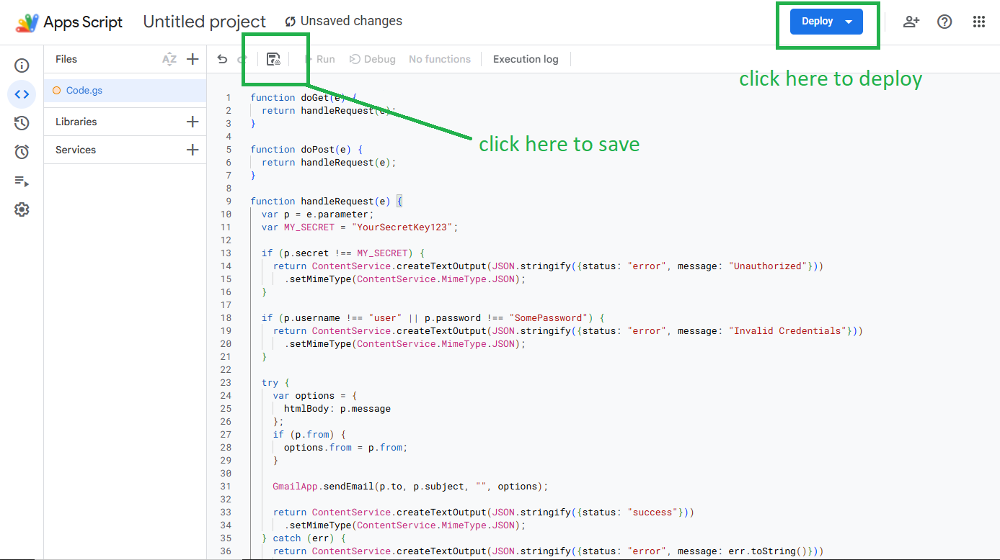
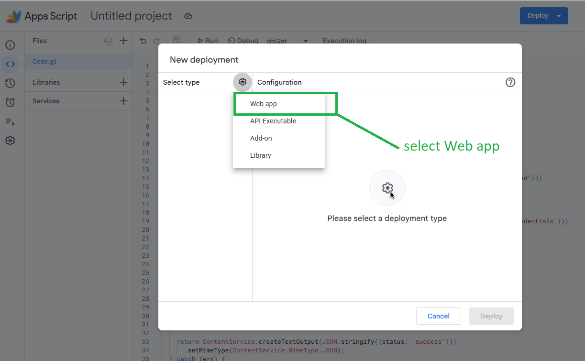
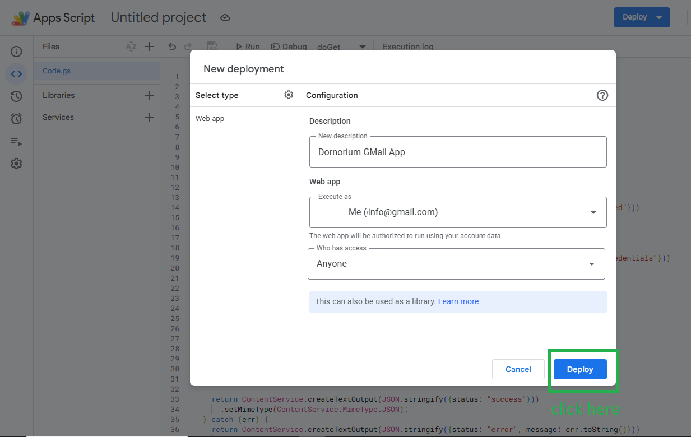
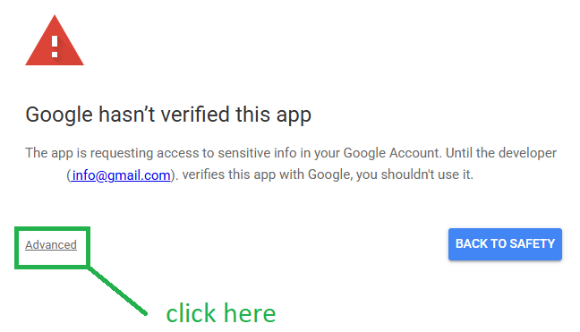
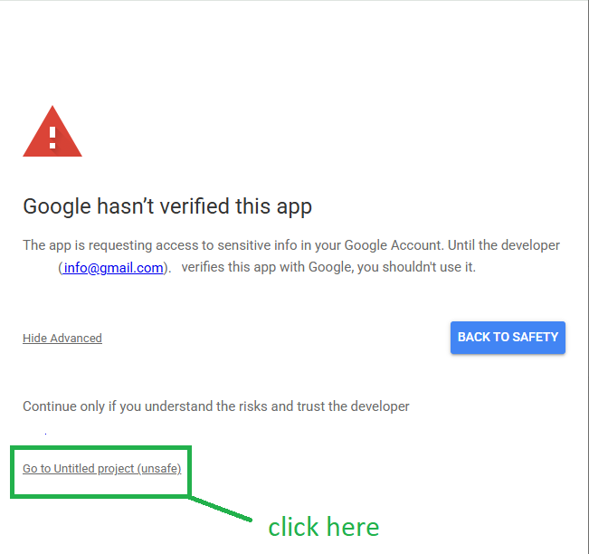
To send emails from a custom domain address (e.g., info@yourdomain.com) without security warnings, you must link it using Gmail's SMTP servers and a Google App Password.
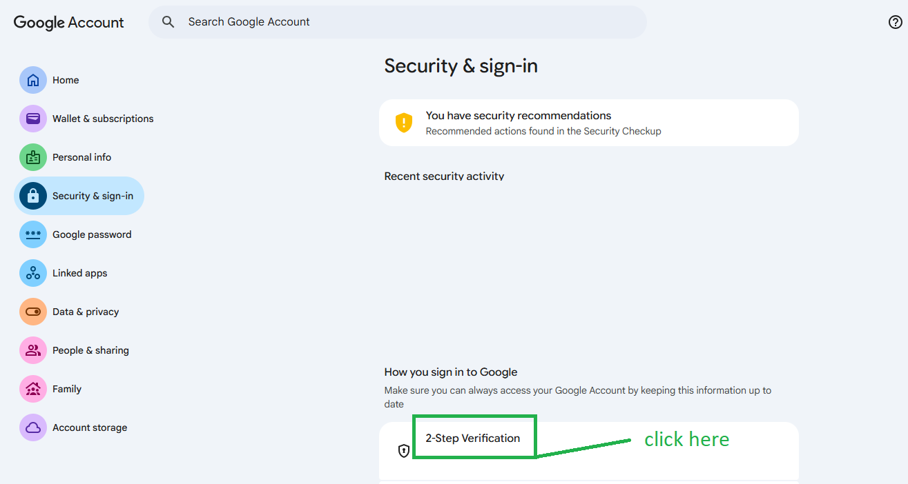
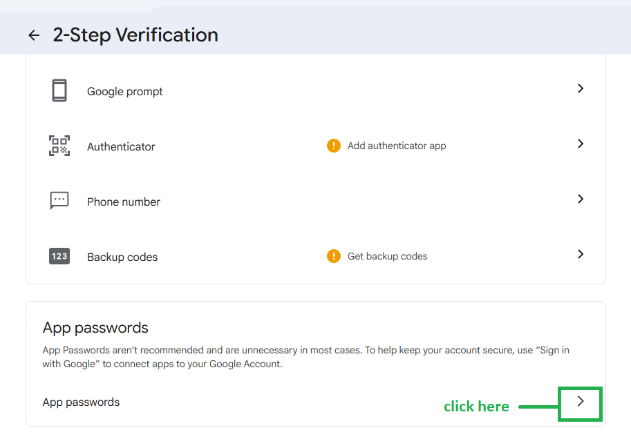
Dornorium SMPT, then click Create.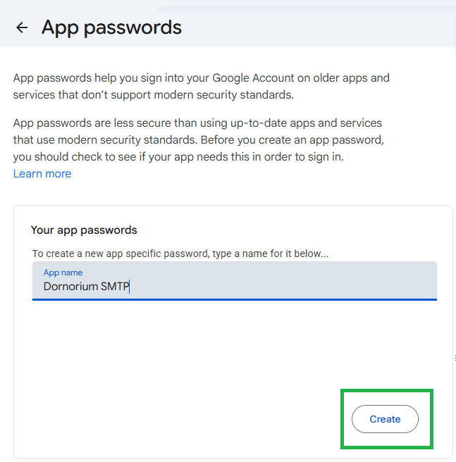
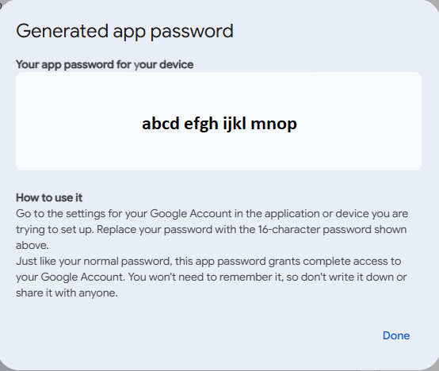
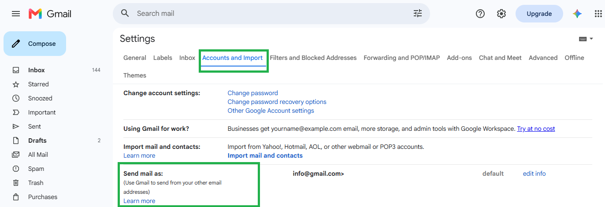
info@yourdomain.com) and click Next Step.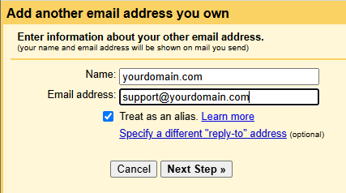
smtp.gmail.com465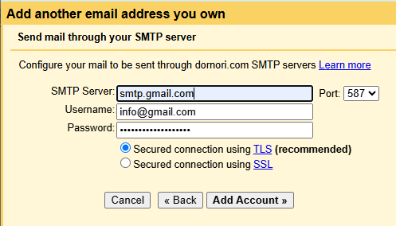